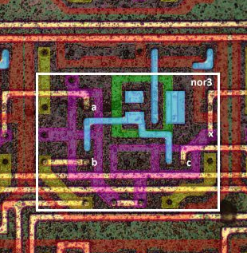
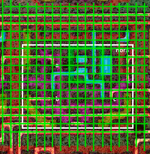

Заметки по топологии
Технологический процесс:
- Биполярные транзисторы
- Один слой металла (m1)
- Всего 2 типа ячеек: логические (реализуют базовые вентили not, nor) и периферические (для терминалов).
Мировые линии (сетка)
Соединения между ячейками выполняются только одним слоем металла (м1). Используемая EDA распологала все "узлы" по сетке:


Для поиска пути (router) по вакантным узлам скорее всего использовался алгоритм AStar или Дейкстры.
Некоторые провода могли перескакивать узлы по диагонали.